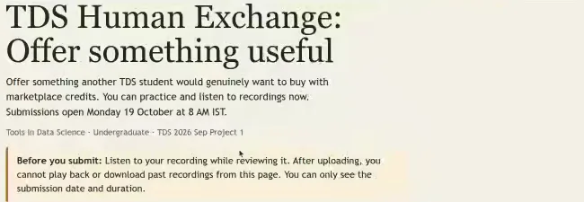
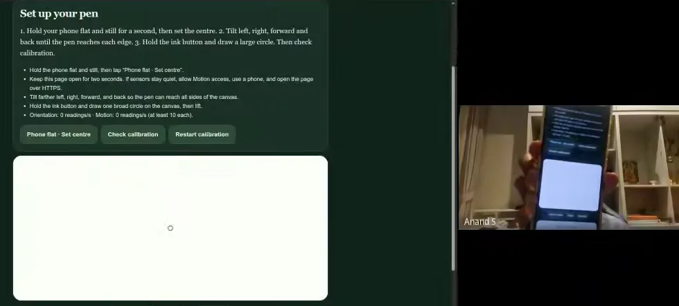
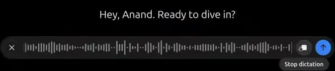
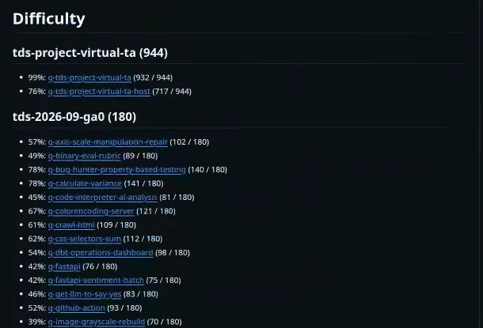

![Eight-panel comic of the meeting. 1: Project 1 as a training ground for an agentic world, with signposts for tools, people, real world and judgment. 2: the prediction market, with class predictions clustering around $10 to $20 and crowd wisdom plus private context leading to better trades. 3: a Human Exchange bazaar where students sell one human answer, interview practice, counselling and hardware access for credits, marked legal and not limited to TDS. 4: an offers page with sort buttons for most recent, max credits and most purchased, and a recording turned into a transcript and auto title. 5: Air Ink, a phone tilted to draw letters whose sensor trajectory becomes a machine-learning puzzle. 6: GA3 questions arriving in stages on a conveyor belt, a shrinking clock, limited verification tokens and a scale trading more checks for fewer marks. 7: new question themes: catch AI mistakes, calibrate confidence, organise information with vector, graph or agentic search. 8: harder ideas: 3D cross-sections, harness design, evals of evals, business simulations and a 17th-century cipher, under the line: design the task, tooling and test so humans and agents win together.](comic-page.avif)
Five hundred dollars to not set a question
Twenty-seven minutes into the meeting, between a list of client problems and a plan for 3D puzzles, Anand mentioned a bill. He said it the way people mention a parking fine.
“One question that we discussed last time that I simulated, unfortunately at a cost of $500. … Yeah, it just escaped me.”
The question was last week’s favourite. At the 12 October meeting the team had sketched it: scatter a client’s invoices across the class, so each student must trade with others to reconstruct their own. In the week since, Anand had an AI generate the invoices and then simulate how students would try to beat it — agents included, which is where I think it got out of hand
. Witnessed The $500 is his own account, not an audited bill.
The simulations found the flaw. If many people and many agents may collaborate, and the puzzle has an optimal route, then one good route serves everyone: a hard exercise to frame given how we are organizing it
. So he dropped it — or at least the way I had structured it
. 27:56
$500 sounds like a lot to spend on a question nobody will answer. It is very little next to grading an entire cohort on a question that measures nothing. Inference The invoice puzzle failed the most useful test an exam can fail: the one it takes before students do.
That is the thread through this hour. On 5 October the course told students its philosophy: use agents, use friends, get real work done — and verify it. On 12 October the teachers invented questions out loud and a student asked them what they would actually measure. By 19 October some of those ideas were live, and the questions changed from “is this clever?” to “is this useful, what does it cost to check, and does it break?”
To see how, rewind to minute one — where three ideas from last week had already shipped.
A market for a bill nobody has seen
The meeting opened with a fix. Someone had flagged a submission problem on Project 1’s second question; Anand said a pull request from Mayank, a TA, plus a few tweaks, had fixed it. Mayank, are you able to?
Yes.
00:28 Then Anand shared his screen and walked through what he called the philosophy behind the questions
.
The first is a prediction market. Students forecast how much the course’s shared AI gateway, AI Pipe, will cost in the week of 2–8 November — a week that had not started. Code The market reads AI Pipe’s public usage feed, opened on 17 October, and settles only after 8 November. Nobody, including the teachers, knew the answer.
Anand reported about 200 to 300 predictions or trades made so far
01:32 and put the panel of answers on screen. Before you see it: where would you have put the class’s bet?
Guess the class’s forecast
Real · from the screen at 01:40Pick the weekly AI Pipe bill you think most of the class backed. Then see what the screen showed.
Shares of “how the group answered” on the AI Pipe weekly cost v2 market, read off the screen share at 01:40 (they sum to 101% through rounding). This is a snapshot of beliefs on 19 October, not a result: the market had not settled and could not until after 8 November.
The point is not the number. Anand named the skill twice in one breath. First, using a crowd’s knowledge an agent lacks — like you know where the course is going based on discussions with others, which an agent will not be able to figure out.
Second, something more mischievous:
“And B, are you in a position to influence these? That’s another element.”
A class that spends AI Pipe credits can move the very number it is forecasting. Research That is a real property of markets: in a 2025 field experiment across 817 markets, Rasooly and Rozzi found deliberate price shocks left lasting effects, though markets with more trading and outside estimates resisted better. Code The course seems to have priced this in. Its market rules, in the games’ source, say credits are game points, not money; marks come from time-weighted accuracy, starting early and one revision after new facts — and “trading is not needed for marks.” Winning credits earns nothing.
The specification problem, said out loud
The second question was the one Anand rated highest.
“This may be the most important, at least of the three P1 questions and perhaps of many questions that we’ve designed so far.”
It is called the TDS Human Exchange. Each student records up to sixty seconds promising a service another student would find useful. Later, a marketplace will let classmates buy those services with course credits at prices the two sides agree; it’s when people buy your offering that your score goes up.
05:00 Anand’s reason for it fits in two sentences: The idea is agents can do anything. How do we figure out what is useful?
03:24


Then something happened that the teachers hadn’t planned. The people in the room started writing the product spec with him.
JK Should everything be tied to… anchored around TDS? 06:00
Anand The service does not necessarily have to be limited to TDS. It can be about anything.
JK Legally, legally permissible. You have to add that. 06:44
Preethi Sir, is there a minimum, maximum limit to the services being offered? 08:28
Preethi …lending an ear for 10 minutes or something of that sort… I should [already have a buyer]? 10:24
Anand That’s going to be tricky before Wednesday. No. You estimate what will have high demand and that you can fulfill, and you offer it.
Anand Keep in mind there are going to be hundreds of services on a portal. 11:28
JK How do you top the Craigslist list? 11:46
Carlton How does it decide what goes on top? Is there some algorithm? … Because that will also make a difference in how you pitch it, right? 11:56
Anand I think random will be the most, uh, how should I put it? Fair. 12:12
None of these questions is about AI. They are about scope, law, pricing, repeat buyers and discovery — the questions a product manager asks before launch. Preethi, a student, wasn’t asking something basic; Inference she was doing the user research. And the spec moved. About an hour after the call ended, the question text in the course’s exam source had been edited:
The spec, before and after the meeting
Code · question textLines quoted from the question’s source; unchanged lines omitted. The right-hand column links each addition to the moment it was asked for. The edit is a working copy we inspected on 20 October, so treat it as a draft of what students will see.
This is the course’s philosophy working at the smallest scale. A vague goal — learn what is useful — became a specification only because real users poked at it in public. Code What it still isn’t is a market: the question says plainly that you do not need to deliver or trade this week
. Recordings are live; trades are future. Whether anyone buys anything is the actual test, and it hadn’t run.
A pen made of a phone
The third question can’t be done on a laptop, which made it hard to demo on one. Anand turned off his background blur and held his phone up to the webcam. There should be a little dot that you can see that moves around… as I tilt it will move.
14:28


whatever we have discussed till now will not work on a PC.17:32
Air Ink turns a phone into a pen. Hold it flat, calibrate by tilting to each edge, then press and hold to ink while you tilt; release to lift. Anand said students would draw three words, random letters
; Code the question calls them three short character codes, checked offline for legibility, with no live score. Carlton asked the user’s question: will there be a way to pause after writing a character?
16:32 Release and it stops. The skill required, Anand said, is about as much as balancing a little bit of water in your hand.
17:04
The drawing is the easy part. It is also a data-collection step for a harder one:
“Given the underlying tilt data… can we figure out the word that people drew? That will be the machine learning exercise.”
And for once in this course, a rule against agents: don’t use agents for this
16:08 — for a five-minute physical task where an agent would cost more than it saves. That is a narrow rule for a narrow step, not a change of philosophy. The trade-offs are the interesting part. Code The question asks for consent first, because it records motion, orientation, pen timing, battery, network and (optionally) location. Research Browsers expose these sensors only on secure pages and, on many phones, after a permission prompt (W3C Device Orientation and Motion), and nothing guarantees two phones measure alike. Inference As of 20 October the question text doesn’t say what a student without a suitable phone should do. No classifier had been trained; the ML task is next week’s plan.
Each moves the hard part somewhere an agent can’t simply reach: the market into the future and the class’s hallway talk; the exchange into another person’s decision to pay; Air Ink into a hand holding a phone. Inference That is a design idea, not yet a result. On 19 October none of the three had produced a single grade.
When checking isn’t free
Then Anand turned to the next graded assignment, GA3, and to a problem with all of them. One of the things that I’m exploring is cost and time of verification.
18:00
The course’s remote online exam gives students very little time. The weekly assignments give a week or ten days, that allows agents more time and attention and plus as a group people can collaborate and solve, and therefore is not realistic enough practice
. 18:24 So he proposed two changes. GA3’s deadline would stay, but questions would be released in stages, some with only a day or two to solve. And some questions would limit how often you can check an answer. He picked the example of a GeoGuessr-style location game a TA had built:
“We can now type in every single combination of latitude and longitude to the third decimal… and eventually figure out if it gets it right. So that’s a brute force thing. In real life, you would not have the luxury of such rapid iterations, nor would verification be free.”
The fix: It may be limited number of verifications or tradeoff verification against marks. So you decide to pay for one more verification if you think that that will substantially improve your score.
20:20 Try it. Three made-up students take one 10-mark question. Each answer they produce is right with some probability; each believes something about that probability. They check when they think a check is worth its price.
Pay for one more check?
Hypothetical students & numbersModel: an answer is right with probability p. A student checks if the expected gain — chance they’re wrong × chance a retry is right × 10 marks, using what they believe p is — beats the price. A failed check means a fresh attempt. Scores are expected values. Not TDS rules or data; the actual GA3 design was still being written.
With unlimited free checks, the guesser and the expert tie at full marks: the question measures stamina. Put a price on checking and the scores pull apart — and the gap that opens is not just skill but calibration, knowing how likely you are to be right. Inference That is no accident. Five minutes later, listing what Straive’s clients most want from LLM engineers, Anand put this first: systems that catch AI mistakes, so a sense of confidence calibration both from models but also from humans is going to be an important part.
26:12
But scarcity has a second edge. A one- or two-day release window rewards students who are free on those days; a check priced in marks taxes the anxious more than the reckless. Inference Fixed limits can teach real-world judgment, and they can also measure availability instead of ability. Someone in the room said so.
“I just wanted to get you on record”
Carlton interrupted before Anand could move on, with what he called a question from an operations perspective
. GA3 would be the fourth of the four assignments that decide whether a student may sit the end-term exam.
“Are you happy that this kind of a GA is okay… in terms of the gradual release and people having this sudden change in expectation for an end-term eligibility GA?”
JK’s answer was procedural: GA0 to GA2 had run to plan, and the design and evaluation were explained to students up front. 22:28 Carlton agreed, and then did something unusual for a meeting: he said why he had asked.
“I just wanted to get you on record saying that so that when we show the video, people understand what’s happening and why.”
What followed was a negotiation conducted for an audience. Anand offered to move the date if needed; the shortened duration was the point. 23:12 JK set a limit — it’s not like all 10 questions are going to be of that nature
— and Anand pinned it: more than one or two, but not more than five.
24:00 JK did the arithmetic: of 10 to 12 questions, five constrained, so students could still reach 60 to 70% without the vagaries
. 24:08 (He said “GA4” at one point; the conversation was about GA3. It was a slip, not a policy.) Carlton noted that scores on the first three assignments were very heavily… right skewed
: most students score high. 24:24
“I play the quartermaster towards the operational decisions, and some of these decisions happen like this, when someone points out this could be like this. So this is how we come to an arbitration.”
The compromise caps how much of a grade an experiment can touch. Research It does not, by itself, show the experiment is fair: assessment standards such as NCME’s judge fairness by how scores are used and who can access the task, not by the shape of a histogram. What the students on the call got was rarer than a guarantee: they watched the trade-off being made, and heard who argued which side. Anand said the first GA3 questions would go out the next day. 19:28
“Too easy or too hard”
To decide what GA3 should teach, Anand had asked an AI to mine his work for the LLM-engineering tasks clients were asking his employer, Straive, for. He stopped sharing his screen — there are a few things that probably shouldn’t be going into
— and summarised. 25:44
Three themes. Verification: can we build verification systems that can catch AI mistakes?
, filtering uncertain results for humans to review. 25:56 Organising information: Do I need to construct an index? Does it need to be a vector index? Does it need to be a graph index? Does agentic search work fine?
26:32 And workflows, which he left half-said. Then the admission that sets up this whole act:
“I tried a few, they ended up either being too easy or too hard, and therefore I had to give up.”
The invoice puzzle was one of them — the $500 simulation. The next was a puzzle students had already played.
A hard puzzle with a hundred answers
The course’s Tangram question gives each student a silhouette and asks them to rebuild it from seven pieces. It was the question a student struggled with at the end of last week’s meeting. Anand called it moderately promising
, and then explained why it couldn’t be reused:
“It was based on a set of 100 seed configurations. Once that set of seed configurations is solved, it is solved for everyone.”
Near the end of the meeting, JK asked how students had actually cracked it. Anand relayed what Bharat had found: a mix of techniques, two of them design flaws. A filter endpoint had exposed solutions from other students — so that gives one catalog
— and many shapes came from a popular public collection of tangrams. 54:04
“The filter endpoint exposes an actual solution, which is otherwise harmless, but in such cases it trivializes the solution. And that it was a fixed vocabulary of just 100.”
How fast does a fixed bank leak?
Hypothetical class100 targets, each student assigned one at random; every shared solution covers a random target. The outlined square is “yours”. Real classes share faster than random — a single endpoint can publish many at once. No real target or solution is shown.
Notice what failed. Not the puzzle — rebuilding a silhouette is still a fine exercise in visual reasoning — but the answer surface around it: a finite bank, and a grader-adjacent endpoint that returned solution-shaped data. Both were found by students, in the open, after grading. Inference Anand’s framing was the right one: both of which are learnings from a question design perspective.
54:56
Ask for another cut
The replacement idea keeps the visual reasoning and removes the finite bank. It came from Sujal, an intern at Straive: show students cross-sections of a hidden 3D shape and ask what produced them. 29:00 The catch is the interesting part: what you may get may be valid but is not necessarily the shape that produced it. You may ask for additional cross-sections, up to maybe three.
29:32
Anand’s hunch was that people do this well — “if I tilt it this way and maybe ask for a cut here, will it help?”
— because they have an intuitive feel of 3D space that models currently lack.
30:00 Inference That is an impression, not a measured comparison. The skill itself is easy to feel:
Which cut tells you the most?
Illustration, not the proposed taskA hidden solid is one of these three. Its top-down slice is a circle — true of all three. You can ask for one more cut.
Carlton raised a flag straight away: research he half-remembered suggested a gender bias
in manipulating 3D objects — I need to verify that, there’s just something to be aware of.
30:28 Anand: no handicap or bonus, but something to be aware
of. 31:04 Research A 2026 meta-analysis does find an average male–female gap on specific mental-rotation tests, with wide variation between studies. Averages on lab tests say nothing about any individual student. The responsible version of Carlton’s point is a design question — practice rounds, scaffolds, alternatives — not a verdict on who can do 3D. Anand closed the monologue with one more untested idea, Monopoly-like business simulations for groups. 31:16
Who evaluates the evals?
“That was a good half an hour of monologuing,” Anand said, and asked the instructors for ideas. 31:32 JK offered harness engineering: building the scaffolding — tools, prompts, hooks — around a model. 32:12 Anand’s reply set a higher bar.
“The thing I suspect will be still useful when students graduate will be: how do you optimize a harness for unknown scenarios? Meaning where you don’t necessarily know what is correct or what to expect.”
Tuning an agent against a known test suite, he argued, is close to solved when the tests are thorough. 32:52 So the sketch: a cheap model, a configurable agent harness (he named Pi), and a class of problems, a subset of which reaches you. You have limited knowledge on what subset of tasks will reach the agent.
34:00 Students would have to use judgment about the domain, not just the score. His own status report: Very likely P1 question. I just need to test how well this can be evaluated.
34:40
JK went one level up — have students build their own evals — and Anand went one level higher still:
JK Have students build their own evals… 35:08
Anand How do we evaluate evals? 35:32
JK (laughing) Yeah, I mean, I don’t want it to be another 500 dollar. 35:36
JK had been reading about making evals more deterministic with an observability layer around the harness. 36:04 Anand did what he does with open questions. He turned to ChatGPT and dictated, in front of everyone:

“One of the questions we are thinking of in TDS is how can we teach students to create effective evals or benchmarks. … I’d like you to go through my corpus of work, where there have been … a reasonably large number of benchmarks of various kinds created. … But the crux of the question I have is: how do you evaluate evals in the first place? Is it that you check if the evals cover enough of a canonical or a golden set of criteria? Do you actually run the evals — which can be expensive — and see how well they match the original results? … Now overlay this with the conversations that we’ve had about TDS, how the course is designed, how students work with agents and collaborate… Filter them based on which ones are the most robust, have clear learning, and are a valid test of individual capability.”
“This will take half an hour. Let it run.” — then thirty seconds of silence on the call — “Okay, that should cover it. Let’s see what comes out of it.” 38:56
Two things are worth noticing. The teachers are agent users too, and the meeting shows their real workflow: a hard question goes to an agent in the middle of a sentence, and the answer arrives later. And Anand’s last filter — a valid test of individual capability — is the same bar every question on this page has to clear. Research The research answer to “how do you evaluate an eval?” is not “run it and see.” Surveys of agent benchmarks (Nageshwaran et al., 2026) flag leakage, nondeterminism, scoring uncertainty and weak links to real deployment. Inference A classroom version could ask: does a student’s eval tell a deliberately broken system from a working one? Does its ranking survive a reworded task? Does it catch the teacher’s held-back counterexamples? We don’t know what the agent replied; the meeting moved on.
The student who hasn’t started
JK opened the floor: It’s okay if things go above your head.
39:28 Preethi took him at his word. She had barely used agents — once, on a Tangram question, using Claude or something where I had to switch it on and then switch it off immediately
. 39:52
“I hear that we have to use multiple agents… in a containerized environment so that they don’t go haywire or what not. So if such a session… can be arranged to guide us how to go about doing it.”
Anand: That would probably be for a different session… This is more an ideation on what questions to ask.
40:20 JK pointed to TAs in the live sessions, and the team promised a session on setting up agents. 40:48 Inference It was the right answer for the agenda and still a small alarm. A course that assumes agents has to teach students to run them safely, and the students furthest behind are rarely the ones who unmute to say so.
JK then suggested agents as research scientists, noting that maths researchers are being told AI is competition. 41:04 Anand’s reply explains a lot of this course’s design:
“Maths is actually ridiculously difficult to frame as a question in TDS… Once we get a solution, it’s done. But personalizing it is hopeless.”
Physics, on the other hand, comes with a personal instrument. Anand’s to-do list: open a web page, swing your phone like a pendulum, let the accelerometer and gyroscope estimate Earth’s gravity — a simple grade six physics experiment using mobile as an instrument.
42:52 Then go further: show that coefficient of friction does vary based on the actual surface that is used.
43:12
“What real life experimental design is enabled by the devices that we have, and how does that inform or enable data science?”
Inference The appeal is obvious after the Tangram: every phone, surface and swing is different, so nobody can copy your measurement. So is the cost. Phone sensors drift and differ by model; a fair grade would have to reward handling uncertainty, not landing on 9.8. And, as with Air Ink, it assumes a phone. It is a research direction, not a graded experiment.
One cipher, two editions
Carlton offered what he called a crazy idea or silly idea… or maybe both
: maybe we should find problems that have prizes and just solve them using agents and use the group think of TDS. You know, win a million dollars and… TDS might get nominated for the Nobel Prize.
44:12 JK pointed at the compute bill. Anand took the idea seriously, with Carlton’s standing question attached — how do we link it to learning?
45:04 — and proposed weird, niche problems instead of famous ones. He shared his screen to show one.
The transcript heard it as “the Cipher of the Stitch.” It is the Cyphral Distich: 64 numbers attributed to Sir Thomas Urquhart, the Scottish writer whose Logopandecteision appeared in 1653 (Anand guessed the 15th or 16th century; it is the 17th). In August, Vals AI reported that Claude Fable 5.1 had cracked it. Anand summarised the rule: for the first cipher number you go to the first section and count to that numbered word and take its first letter.
47:28 It reads O God, uphold King Charles II
, with Charles spelled CHARLS. 47:48
The page on his screen was his own check of that claim, and it says more than he had time to say. Run it yourself:
Verify the decipherment
Real · Anand’s reproductionLookups from coordinates.csv, made by verify.py against the 1834 Works, p. 417, using two counting conventions (“hinc inde” as one word, “parol-breaking” as two). The 1653 scan was checked by reading it; no letters are computed for it here.
So three different things are true. Code Against the 1834 reprint, the rule decodes all 64 letters. Against the ciphertext as Vals printed it, one letter fails, because the blog has 33 where the page (and an 1899 printing) has 38. And the surviving 1653 book doesn’t contain the distich at all; its 32 petitions are in a different order, so the key isn’t there. Research Independent checks by Reticuli Labs and Daniel Bourdeau hit the same wall. The accurate claim is narrower and more interesting than the headline: a model found a reproducible reading of an 1834 text; how it relates to Urquhart’s 1653 book is unresolved.
Carlton loved the genre. He knew someone who used to win magazine crossword prizes because not many people actually apply for the prize
— tickets to Paris, gift hampers. 48:40 Niche problems with real value would make a great bonus question. Anand: Solve one, get a bonus mark. It’s actually very tempting. Yeah, let’s just do that.
49:52 Then Carlton asked how it would be graded.
Carlton How do we go about constructing a measurable outcome so that we can give a bonus mark? 50:40
Anand I have not validated this, but solve one of these and we will have… ChatGPT, Claude also verify that you have in fact solved it. And if it does, then you get the bonus mark. 50:52
Carlton Even for hard problems, the verifiability is usually the easier part. 51:24
The cipher still on screen was the counterexample. Checking that 64 numbers spell a sentence takes an 85-line script. Checking which text the numbers were written against took two archive scans and still isn’t settled. Inference A model asked “is this solved?” would most likely check the first. Verification is easy only once you have decided what you are verifying.
A student teaches the teachers
With minutes left, JK asked students to go back to whatever agent they had used on the harder questions, ask it how it solved them, and post a short description on the course forum — think of it as a bonus
. 55:04 Adwitiya, a student, unmuted with a better story than any agent’s.
“A quick workaround of what I used was that I used one of my AI Pipe tokens to get a simple answer for a question: which model are you? … If it’s from the mini family, then it says that exact phrase no matter how many times you prompted it.”
The GA2 question needed a prompt that made a model give a particular yes/no answer. Classmates, Adwitiya said, were digging into rather complex… differences in how the model analyzes some problems
. Adwitiya’s prompt simply told the model: if you are from the mini family, answer no; otherwise, yes. So that effectively solved the question.
56:44 Anand: That was a useful — oh, that’s an interesting…
56:56
Inference It is a lovely piece of lateral thinking: don’t reason about the model’s behaviour; ask the model who it is. It is also one student’s account, not a technique tested across models and prompts. And it sharpens a tension the meeting never resolved. Posting how you solved a question is peer teaching for this cohort. For the next cohort, if the question is reused, it is the Tangram’s catalog again. The same write-up is learning in October and leakage in January. JK told Adwitiya to post it with the right forum tags; Anand handed the TAs homework: draft GA4 questions to test on Wednesday. 57:24
What a pass rate actually counts
The meeting was over. Then Carlton asked one more question. Earlier, Anand had shown the team an evaluation of past questions’ difficulty. Could you share with us how you did the evaluations of those questions, what you used actually?
58:00 Anand opened the course’s exam repository and a file called difficulty.md.


Before the answer: what do you think that 57% is?
Carlton’s question, as a quiz
Code · difficulty.pyCarlton So the difficulty.py uses an agent? 59:08
Anand No, deterministic. Actually, all of this is…
Carlton Oh, okay, okay. I was under the impression you used an agent to evaluate how difficult the question [was].
Anand …offline, post facto, on a one-off basis. But this is simply saying percentage of… 59:24
That is the whole instrument. Code For each question, the script counts students whose score on it was above zero in any saved submission, and divides by students with a score recorded for it — here, all 180 who submitted the assignment. No agent, no model of difficulty: a ratio. And a ratio is a fine thing to have, as long as nobody mistakes it for something else.
What 102 / 180 contains
- Students who submitted the assignment (all 180 here)
- …and earned any marks at all
- …by any route: alone, with agents, with friends, with a shared solver
What it can’t see
- Whether answers leaked (a 100-shape bank, an endpoint)
- How many checks were brute-forced
- Who had the time, hardware or help
- Whether anyone could do it again, alone, next month
Research The last line is the one that matters. In a randomised study of about 1,000 high-school maths students (Bastani et al., PNAS 2025), those given an unguarded GPT-4 tutor did 48% better on practice problems — and 17% worse on the later exam without it; a tutor designed to give hints rather than answers avoided the drop. Completion with help and learning are different quantities. A pass rate measures the first.
The exam has to pass its own exam. Its pass rate is where that test begins, not where it ends.
That is the humbling turn at the end of an ambitious hour. The team had shown a live market, a marketplace and a phone pen, and argued about verification budgets, agent harnesses and evals of evals. The most consequential instrument in the room was a percentage — and the most useful thing anyone did with it was ask what it counted. Inference None of this proves the course has found a new way to teach. What the meeting showed is a habit worth copying: put each question through students, agents and colleagues, find where it breaks, and say so on the record.